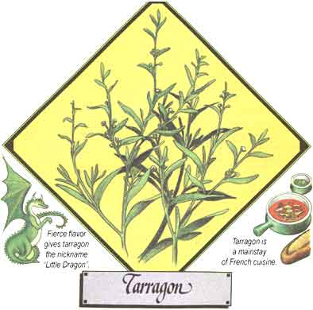

Lately, more and more people hove begun to understand just how limited-in both variety and nutritional value-our "modern" diets have become. This realization has sparked a new and widespread interest in the culinary and therapeutic uses of herbs . . . those plants which-although not well-known today-were, just one short generation ago, honored "guests" on the dinner tables and in the medicine chests of our grandparents' homes. In this regular feature, MOTHER will examine the availability, cultivation, and benefits of our "forgotten" vegetable foods and remedies . . . and-we hope-help prevent the loss of still another bit of an cestral lore.
Vinegar and sauce bearnaise, tartar sauce and hollandaise . . . what do all these condiments have in common? Why, they can all include tarragon, of course, the crown prince of the Artemisia herbs . . . whose family includes the fragrant southernwood, wormwood, the Silver King ornamental, and our native western sagebrush.
There are two species of tarragon: the Russian, Artemisia dracunculoides (native to Asia), which is the hardier, more prolific-and less desirable-of the pair . . . and the French, Artemisia dracunculus (from southern Europe), which contains the essential oils so treasured in cooking.
Known as estragon or herbe au dragon in France-where it's considered one of the fine (as opposed to robust) herbs and is a mainstay of that nation's famous cuisine-tarragon lends a distinctive and delicious flavor to chicken, veal, seafood, numerous vegetables, salads, sauces, marinades, and more. The herb must be used with a light hand, however, because its flavor-something of anise, something of camphor, and something unique-is so fierce that it overpowers other tastes with ease!
In the Middle Ages the herb was thought to increase physical stamina, so many pilgrims put sprigs of it inside their shoes before setting out on a journey. And-although its use today is almost exclusively culinary-people have employed tarragon as a cure for hiccups, tooth ache, worms, indigestion, air swallowing, rheumatism, lack of appetite, irregular menses, and water retention.
An attractive plant, French tarragon is a moderately tall (two-to three-foot) perennial with long, narrow leaves which are green (rather than gray green, as are those of other Artemisia species), smooth, and entire. Its flowers, yellow mingled with black, appear in August . . . but seldom open fully and, unlike the Russian variety, almost never set seed. The long, fibrous roots grow more laterally than vertically, and may thus be injured by too vigorous hoeing.
Propagation is accomplished through the use of cuttings taken in early spring, or by root division in March or April. The plants do best if spaced well apart in rich, well-drained, and somewhat dry soil. Once established, they should be fertilized with a liquid solution such as fish emulsion. Generous layers of mulch will help the herbs make it through the winter. Every four years or so, they'll need to be divided to prevent their losing vigor.
Cuttings for the kitchen can be taken in June. When picking leaves for drying, however, it's best to wait until July . . . when the lower foliage starts turning yellow. Carefully strip the leaves from the stems and dry them in a shaded, well-ventilated area (no hotter than 90°F) . . . then use airtight containers for storage, or the foliage will reabsorb moisture.
Tarragon has been known in the Old World for centuries, but it didn't reach America until the early 1800's. Its popularity here has increased with today's rebirth of interest in herb culture, but it's not always easy to find nursery plants. Some good sources to try, however, include [1] Sunny Farm Nursery, Dept. TMEN, 9448 Mayfield Road, Chesterland, Ohio 44026 (catalog $1.00, refundable) . . . [2] White Flower Farm, Dept. TMEN, Route 63, Litchfield, Connecticut 06759 (an initial $5.00 charge covers three full-color publications: two 75- to 100-page catalogs and the company's special Christmas Notes) . . . and [3] Taylor's Herb Garden, Inc., Dept. TMEN, 1535 Lone Oak Road, Vista, California 92083 (catalog $1.00).
|
 |
|
|